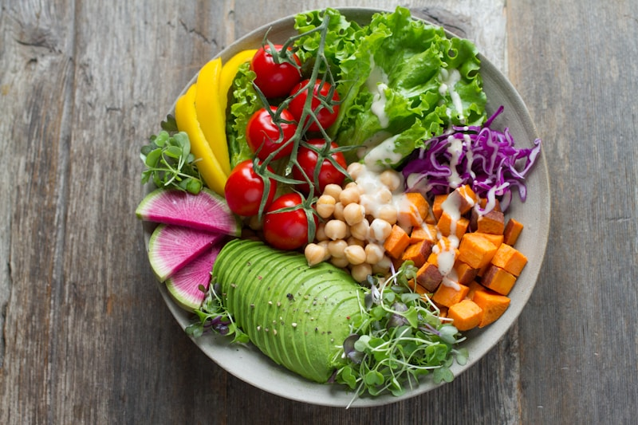
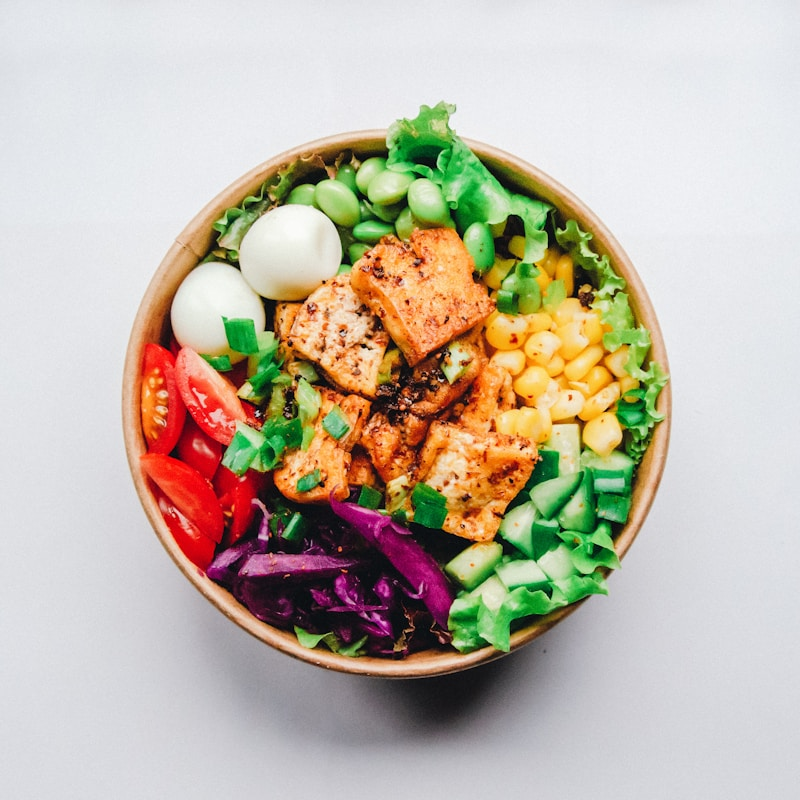

001
Menús Semanales IA
Planes de 7 días con desayuno, almuerzo, cena y colaciones, diseñados para mantener tu glucosa estable.
VITALIS es una plataforma web de gestión nutricional inteligente diseñada para personas con diabetes. Mediante el uso de Inteligencia Artificial, analiza información relevante para generar recomendaciones alimenticias personalizadas, facilitando la planificación de comidas saludables y equilibradas. Nuestro objetivo es ayudarte a tomar mejores decisiones nutricionales, mejorar tu calidad de vida y convertir el cuidado de tu salud en una experiencia más simple, accesible y eficiente.
Cuidar tu alimentación no debería ser complicado. Por eso, VITALIS utiliza Inteligencia Artificial para crear planes nutricionales personalizados que se adaptan a tu estilo de vida y a las necesidades específicas de las personas con diabetes. Nuestra plataforma te ayuda a organizar tus comidas de manera sencilla, rápida y confiable, eliminando la improvisación y reduciendo el tiempo que dedicas a decidir qué comer.
Procesamos tus preferencias, alergias y objetivos para generar un plan equilibrado en segundos.
Registra tu glucosa y visualiza tu evolución con reportes semanales claros y visuales.
Recibe recetas, ingredientes exactos y lista de compras. Solo cocinar y disfrutar.
Sin descargar aplicaciones. Funciona en cualquier dispositivo con acceso a internet.

Planes de 7 días con desayuno, almuerzo, cena y colaciones, diseñados para mantener tu glucosa estable.
Registra tus niveles diarios y obtén gráficos de evolución para entender cómo reacciona tu cuerpo.

Recibe recetas paso a paso, ingredientes exactos y una lista de compra organizada por categorías.